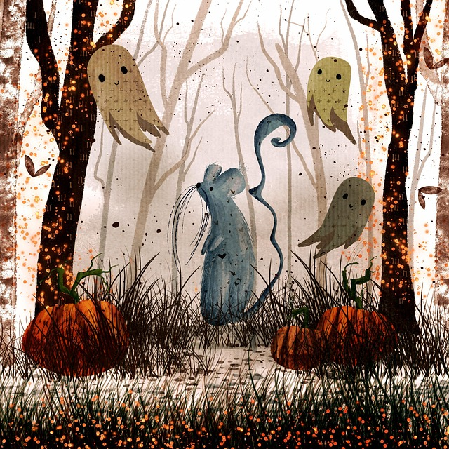

In a forgotten town where the fog never lifted and the trees whispered secrets, lived a young poet named Elira. She had a gift for words, but one day, her inspiration vanished like morning mist.
Desperate to write again, Elira wandered into the ruins of an old theater, once grand but now crumbling and silent. As she stepped onto the dusty stage, she whispered, “If anything is listening… I need a muse.”
A cold breeze swept through the hall, and then… a figure appeared in the balcony—pale and glowing, with eyes like candlelight.
“I was once a muse,” said the ghostly woman. “A dancer. A writer’s light. I will help you… but you must promise never to forget me.”
Elira, overwhelmed with awe and longing, agreed.
From that night on, the ghost whispered verses into her dreams, danced through her thoughts, and filled her hands with poems. Elira became famous. Her words were haunting and beautiful, like songs sung by shadows.
But with each poem, the ghost grew stronger—and Elira weaker. She no longer dreamed her own dreams. Her thoughts were not her own. She could only write what the ghost gave her.
One night, Elira cried out, “I want my own voice back!”
The ghost stepped forward, her once-soft eyes now hollow. “You gave it away. I was your muse, but you let me become your master.”
Terrified, Elira fled the theater, vowing never to return. It took years, but eventually, she began to write again—not with ghostly help, but from her own heart. The words weren’t perfect, but they were truly hers.
The theater still stands, and sometimes, people hear a whisper on the wind: “Will you remember me?”